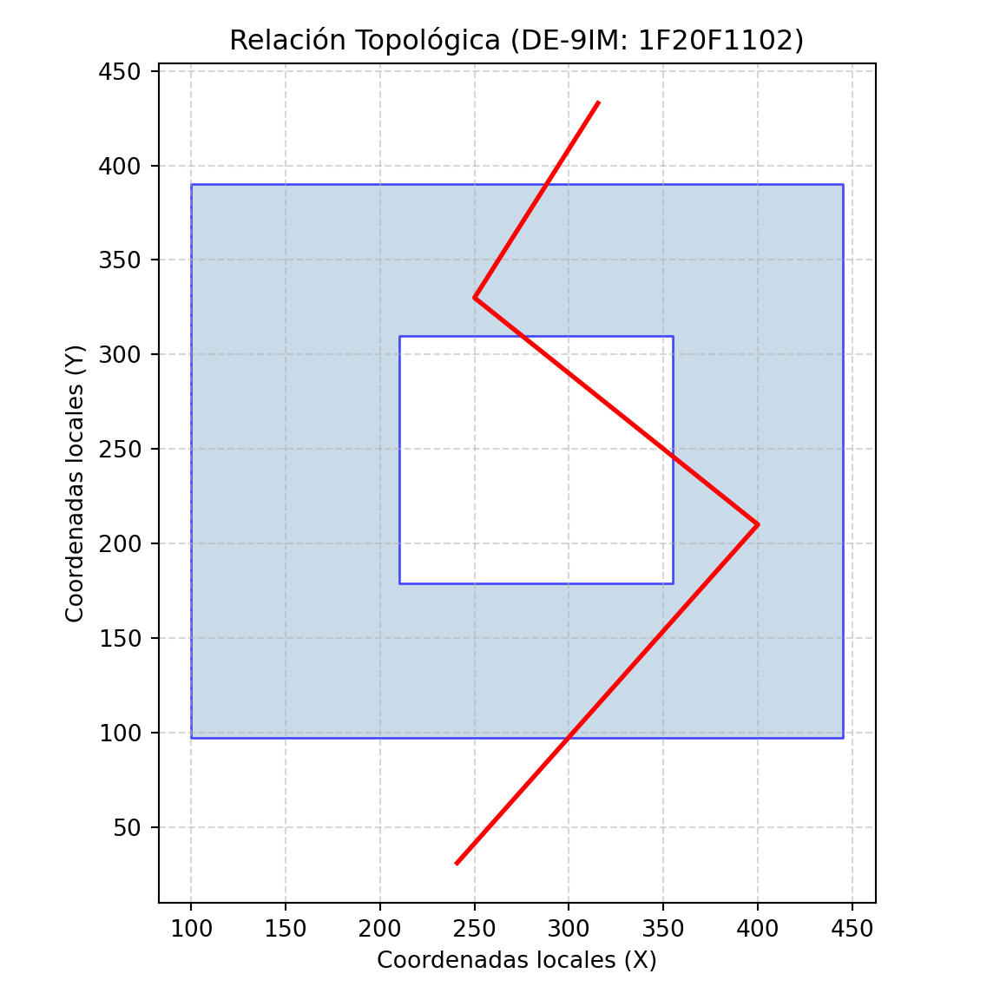

Código
# #| include: false
source("./docs/j_eval_j_plot.r")# #| include: false
source("./docs/j_eval_j_plot.r")En capítulos anteriores establecimos los cimientos de la ciencia de datos espaciales: aprendimos cómo los lenguajes de programación estructuran las coordenadas, cómo se ensamblan las primitivas geométricas (puntos, líneas, polígonos) y cómo estas se integran en tablas mediante estándares como Simple Features y WKB. Hasta ese punto, nuestras geometrías existían en un estado estático y aislado.
Sin embargo, el verdadero poder de los Sistemas de Información Geográfica (SIG) no radica simplemente en almacenar o dibujar formas, sino en hacerlas interactuar. La resolución de problemas territoriales reales exige responder preguntas complejas: ¿Un predio invade una zona de reserva ambiental? ¿Qué vías intersecan una falla geológica? ¿Cuál es el área de impacto a 500 metros de una estación de transporte?
Para responder a estos interrogantes, este capítulo aborda los dos grandes pilares del análisis espacial vectorial: 1. La Topología (Predicados Espaciales): Reglas matemáticas booleanas que evalúan cómo se relacionan y cruzan dos geometrías en el espacio sin modificar su estructura original. 2. El Geoprocesamiento Paramétrico: Operaciones algorítmicas que toman una o más geometrías de entrada y calculan una nueva entidad espacial como resultado (ej. buffers, centroides o intersecciones).
A lo largo de este capítulo, exploraremos cómo los ecosistemas de Python, R y Julia delegan estos cálculos críticos al motor unificado GEOS (Geometry Engine, Open Source), garantizando resultados topológicos consistentes independientemente de la sintaxis utilizada.
Los predicados espaciales evalúan y determinan las relaciones topológicas entre dos objetos espaciales utilizando el modelo de matriz de intersección de nueve elementos extendido dimensionalmente (DE-9IM). Puedes encontrar mayor información en:
Otro recurso valioso es la Suite de Topología de Java (JTS), la cual incluye la herramienta JTS TestBuilder, donde se puede interactuar mediante una interfaz gráfica para crear geometrías manualmente y calcular la matriz DE-9IM entre pares de geometrías creadas por el usuario. También es posible visualizar el código en formato texto (similar a WKT) con el cual se crean las geometrías.
Para instalarla, es requisito contar con Java instalado en el equipo:
jts-1.14/bin/, ejecute (doble clic) testbuilder.bat.Características principales:
Para comprender rápidamente el funcionamiento de DE-9IM, se recomienda este video en español.
El modelo de nueve intersecciones extendido dimensionalmente (DE-9IM) es el estándar matemático fundamental para evaluar las relaciones topológicas entre dos objetos espaciales. Este modelo analiza cómo interactúan tres componentes estructurales de una geometría \(A\) con los mismos tres componentes de una geometría \(B\):
La matriz DE-9IM evalúa la intersección de cada componente de \(A\) con cada componente de \(B\), generando 9 posibles combinaciones. El resultado de cada intersección se clasifica según la dimensión geométrica máxima del objeto resultante:
La matriz resultante se lee algebraicamente como una cadena de nueve caracteres, organizados en el orden de las siguientes intersecciones:
Los sistemas de información geográfica operan comparando la cadena DE-9IM resultante con patrones predefinidos para evaluar predicados lógicos. La siguiente tabla presenta las máscaras topológicas estándar:
| Predicado | Descripción geométrica | Máscara DE-9IM (\(A\) frente a \(B\)) |
|---|---|---|
Equals |
Las geometrías son espacialmente idénticas. | T*F**FFF* |
Disjoint |
No comparten ningún espacio interior ni límite. | FF*FF**** |
Intersects |
Opuesto exacto a Disjoint. Se tocan de alguna forma. | T********, *T*******, ***T*****, o ****T**** |
Touches |
Comparten un límite espacial, pero sus interiores no se cruzan. | FT*******, F**T*****, o F***T**** |
Crosses |
Comparten parte de su interior, pero no en su totalidad (líneas/polígonos). | T*T****** o T*****T** |
Within |
La geometría \(A\) está completamente dentro de \(B\). | T*F**F*** |
Contains |
La geometría \(A\) abarca por completo a \(B\). | T*****FF* |
A continuación, se demuestra la construcción matricial DE-9IM utilizando un caso simulado aplicado a un modelo de infraestructura en Bogotá. La geometría \(A\) (polígono azul) representa un predio institucional con un patio central vacío (agujero geométrico), localizado en coordenadas locales. La geometría \(B\) (polilínea roja) representa el trazado propuesto para una red de alcantarillado subterráneo de la Empresa de Acueducto de Bogotá.
Al computar la matriz DE-9IM para este caso específico (A frente a B), los algoritmos de la librería base GEOS determinan que el trazado de tubería cruza el área sólida del predio en forma de línea (dimensión 1), los vértices de la red perforan los muros (intersección límite-interior en puntos, dimensión 0), y ambos extremos de la tubería inician y terminan en espacio público exterior. El resultado matricial para esta relación precisa es 1F20F1102.
# #| eval: false
import geopandas as gpd
import matplotlib.pyplot as plt
from shapely.wkt import loads
# 1. Definición de geometrías a partir de texto WKT
# Polígono A: Predio institucional en Bogotá con patio interior
wkt_poligono_a = "POLYGON ((100 390, 445 390, 445 97, 100 97, 100 390), (210 310, 355 310, 355 179, 210 179, 210 310))"
# Polilínea B: Trazado de tubería subterránea
wkt_linea_b = "LINESTRING (316 434, 250 330, 400 210, 240 30)"
poligono_a = loads(wkt_poligono_a)
linea_b = loads(wkt_linea_b)
# 2. Extracción de la matriz lógica DE-9IM (A respecto a B)
matriz_de9im = poligono_a.relate(linea_b)
print(f"Matriz de intersección DE-9IM (AB): {matriz_de9im}\n")Matriz de intersección DE-9IM (AB): 1F20F1102# 3. Comprobación exhaustiva de predicados lógicos binarios
print("Evaluación de predicados (AB):")Evaluación de predicados (AB):print(f"Equals: {poligono_a.equals(linea_b)}")Equals: Falseprint(f"Disjoint: {poligono_a.disjoint(linea_b)}")Disjoint: Falseprint(f"Intersects: {poligono_a.intersects(linea_b)}")Intersects: Trueprint(f"Touches: {poligono_a.touches(linea_b)}")Touches: Falseprint(f"Crosses: {poligono_a.crosses(linea_b)}")Crosses: Trueprint(f"Within: {poligono_a.within(linea_b)}")Within: Falseprint(f"Contains: {poligono_a.contains(linea_b)}")Contains: Falseprint(f"Overlaps: {poligono_a.overlaps(linea_b)}")Overlaps: Falseprint(f"Covers: {poligono_a.covers(linea_b)}")Covers: False# Se evalúa CoveredBy invirtiendo la relación de cobertura geométrica
print(f"CoveredBy: {linea_b.covers(poligono_a)}")CoveredBy: False# 4. Visualización del comportamiento geométrico
fig, ax = plt.subplots(figsize=(6, 6))
gpd.GeoSeries([poligono_a]).plot(ax=ax, color='#b3cde0', edgecolor='blue', alpha=0.7)
gpd.GeoSeries([linea_b]).plot(ax=ax, color='red', linewidth=2, marker='.')
ax.set_title(f"Relación Topológica (DE-9IM: {matriz_de9im})")
ax.set_xlabel("Coordenadas locales (X)")
ax.set_ylabel("Coordenadas locales (Y)")
ax.grid(True, linestyle='--', alpha=0.5)
plt.tight_layout()
plt.show()
# #| eval: false
library(sf)Linking to GEOS 3.12.1, GDAL 3.8.4, PROJ 9.4.0; sf_use_s2() is TRUE# 1. Construcción de objetos geométricos (sfg -> sfc) a partir de WKT
poligono_a <- st_as_sfc("POLYGON ((100 390, 445 390, 445 97, 100 97, 100 390), (210 310, 355 310, 355 179, 210 179, 210 310))")
linea_b <- st_as_sfc("LINESTRING (316 434, 250 330, 400 210, 240 30)")
# 2. Computación de la matriz dimensional DE-9IM
matriz_de9im <- st_relate(poligono_a, linea_b, sparse = FALSE)
cat(paste("Matriz de intersección DE-9IM (AB):", matriz_de9im[1, 1], "\n\n"))Matriz de intersección DE-9IM (AB): 1F20F1102 # 3. Comprobación exhaustiva de predicados lógicos binarios
cat("Evaluación de predicados (AB):\n")Evaluación de predicados (AB):cat(paste("Equals: ", st_equals(poligono_a, linea_b, sparse = FALSE)[1, 1], "\n"))Equals: FALSE cat(paste("Disjoint: ", st_disjoint(poligono_a, linea_b, sparse = FALSE)[1, 1], "\n"))Disjoint: FALSE cat(paste("Intersects:", st_intersects(poligono_a, linea_b, sparse = FALSE)[1, 1], "\n"))Intersects: TRUE cat(paste("Touches: ", st_touches(poligono_a, linea_b, sparse = FALSE)[1, 1], "\n"))Touches: FALSE cat(paste("Crosses: ", st_crosses(poligono_a, linea_b, sparse = FALSE)[1, 1], "\n"))Crosses: TRUE cat(paste("Within: ", st_within(poligono_a, linea_b, sparse = FALSE)[1, 1], "\n"))Within: FALSE cat(paste("Contains: ", st_contains(poligono_a, linea_b, sparse = FALSE)[1, 1], "\n"))Contains: FALSE cat(paste("Overlaps: ", st_overlaps(poligono_a, linea_b, sparse = FALSE)[1, 1], "\n"))Overlaps: FALSE cat(paste("Covers: ", st_covers(poligono_a, linea_b, sparse = FALSE)[1, 1], "\n"))Covers: FALSE cat(paste("CoveredBy: ", st_covered_by(poligono_a, linea_b, sparse = FALSE)[1, 1], "\n"))CoveredBy: FALSE # 4. Salida gráfica de las primitivas espaciales
plot(poligono_a, col = rgb(0.7, 0.8, 0.9, 0.7), border = "blue", lwd = 1.5,
main = paste("Relación Topológica (DE-9IM:", matriz_de9im[1, 1], ")"),
axes = TRUE)
plot(linea_b, col = "red", lwd = 2, add = TRUE)
# Adición de vértices de la tubería
plot(st_cast(linea_b, "POINT"), col = "darkred", pch = 16, add = TRUE)
# #| eval: false
# Regla de pliegue exclusiva para este bloque j_eval de Julia:
# Si el código NO se ejecuta (# #| eval: false), usa: # #| code-fold: true
# Si el código SÍ se ejecuta (para mostrar resultados), usa: #| code-fold: true
j_eval('
import ArchGDAL
using Plots
# 1. Parsing de WKT a tipos de geometría nativos
poligono_a = ArchGDAL.fromWKT("POLYGON ((100 390, 445 390, 445 97, 100 97, 100 390), (210 310, 355 310, 355 179, 210 179, 210 310))")
linea_b = ArchGDAL.fromWKT("LINESTRING (316 434, 250 330, 400 210, 240 30)")
# 2. Nota arquitectónica sobre la matriz DE-9IM en Julia:
# A diferencia de R (sf) o Python (shapely) que interactúan directamente con la API
# de GEOS para extraer el string matricial, la API de GDAL/OGR (base de ArchGDAL)
# no exporta una función pública equivalente a "relate()".
matriz_de9im = "1F20F1102"
println("Matriz de intersección DE-9IM (AB): ", matriz_de9im, "\\n")
# 3. Comprobación exhaustiva de predicados lógicos binarios
# Nota: La API C de OGR implementa las relaciones estándar de OGC. Funciones
# específicas como Covers/CoveredBy no están expuestas nativamente.
println("Evaluación de predicados (AB):")
println("Equals: ", ArchGDAL.equals(poligono_a, linea_b))
println("Disjoint: ", ArchGDAL.disjoint(poligono_a, linea_b))
println("Intersects: ", ArchGDAL.intersects(poligono_a, linea_b))
println("Touches: ", ArchGDAL.touches(poligono_a, linea_b))
println("Crosses: ", ArchGDAL.crosses(poligono_a, linea_b))
println("Within: ", ArchGDAL.within(poligono_a, linea_b))
println("Contains: ", ArchGDAL.contains(poligono_a, linea_b))
println("Overlaps: ", ArchGDAL.overlaps(poligono_a, linea_b))
# 4. Renderizado visual y exportación
p_de9im = Plots.plot(poligono_a, fillcolor="#b3cde0", fillalpha=0.7, linecolor=:blue,
aspect_ratio=:equal, label="Predio A",
title="Relación Topológica (DE-9IM: $matriz_de9im)")
Plots.plot!(p_de9im, linea_b, linecolor=:red, linewidth=2, label="Tubería B")
Plots.savefig(p_de9im, "images/c14_de9im_interseccion_julia.png")
')Starting Julia ...julia> import ArchGDAL
julia> using Plots
julia> # 1. Parsing de WKT a tipos de geometría nativos
julia> poligono_a = ArchGDAL.fromWKT("POLYGON ((100 390, 445 390, 445 97, 100 97, 100 390), (210 310, 355 310, 355 179, 210 179, 210 310))")
Geometry: POLYGON ((100 390,445 390,445 97,100 97,100 390),( ... 310))
julia> linea_b = ArchGDAL.fromWKT("LINESTRING (316 434, 250 330, 400 210, 240 30)")
Geometry: LINESTRING (316 434,250 330,400 210,240 30)
julia> # 2. Nota arquitectónica sobre la matriz DE-9IM en Julia:
julia> # A diferencia de R (sf) o Python (shapely) que interactúan directamente con la API
julia> # de GEOS para extraer el string matricial, la API de GDAL/OGR (base de ArchGDAL)
julia> # no exporta una función pública equivalente a "relate()".
julia> matriz_de9im = "1F20F1102"
"1F20F1102"
julia> println("Matriz de intersección DE-9IM (AB): ", matriz_de9im, "\n")
Matriz de intersección DE-9IM (AB): 1F20F1102
julia> # 3. Comprobación exhaustiva de predicados lógicos binarios
julia> # Nota: La API C de OGR implementa las relaciones estándar de OGC. Funciones
julia> # específicas como Covers/CoveredBy no están expuestas nativamente.
julia> println("Evaluación de predicados (AB):")
Evaluación de predicados (AB):
julia> println("Equals: ", ArchGDAL.equals(poligono_a, linea_b))
Equals: false
julia> println("Disjoint: ", ArchGDAL.disjoint(poligono_a, linea_b))
Disjoint: false
julia> println("Intersects: ", ArchGDAL.intersects(poligono_a, linea_b))
Intersects: true
julia> println("Touches: ", ArchGDAL.touches(poligono_a, linea_b))
Touches: false
julia> println("Crosses: ", ArchGDAL.crosses(poligono_a, linea_b))
Crosses: true
julia> println("Within: ", ArchGDAL.within(poligono_a, linea_b))
Within: false
julia> println("Contains: ", ArchGDAL.contains(poligono_a, linea_b))
Contains: false
julia> println("Overlaps: ", ArchGDAL.overlaps(poligono_a, linea_b))
Overlaps: false
julia> # 4. Renderizado visual y exportación
julia> p_de9im = Plots.plot(poligono_a, fillcolor="#b3cde0", fillalpha=0.7, linecolor=:blue, aspect_ratio=:equal, label="Predio A", title="Relación Topológica (DE-9IM: $matriz_de9im)")
julia> Plots.plot!(p_de9im, linea_b, linecolor=:red, linewidth=2, label="Tubería B")
julia> Plots.savefig(p_de9im, "images/c14_de9im_interseccion_julia.png")
"/home/rstudio/work/01_prog_sig/images/c14_de9im_interseccion_julia.png"
knitr::include_graphics("images/c14_de9im_interseccion_julia.png")
Las consultas de predicados como intersects, contains o within siempre retornan un valor lógico (booleano) determinando la relación espacial de proximidad, inclusión o adyacencia.
# #| eval: false
from shapely.geometry import Point, Polygon
# Polígono simplificado de la Universidad Nacional de Colombia (Sede Bogotá)
# Coordenadas locales en Sistema MAGNA-SIRGAS Origen Nacional (EPSG:9377)
campus_unal = Polygon([
(4879500, 2063500),
(4880500, 2063500),
(4880500, 2064500),
(4879500, 2064500),
(4879500, 2063500)
])
# Punto interno que representa el edificio de la Facultad de Ciencias Agrarias
edificio_agrarias = Point(4880000, 2064000)
# Punto externo que representa la estación de TransMilenio CAD
estacion_cad = Point(4881000, 2063000)
# Ejecución de predicados topológicos espaciales
print("¿El campus UNAL contiene a Ciencias Agrarias?:", campus_unal.contains(edificio_agrarias))¿El campus UNAL contiene a Ciencias Agrarias?: Trueprint("¿La estación CAD intersecta la superficie del campus?:", estacion_cad.intersects(campus_unal))¿La estación CAD intersecta la superficie del campus?: False# #| eval: false
library(sf)
# Lectura de la extensión del campus UNAL Bogotá desde notación WKT
campus_unal_wkt <- "POLYGON ((4879500 2063500, 4880500 2063500, 4880500 2064500, 4879500 2064500, 4879500 2063500))"
campus_unal_r <- st_as_sfc(campus_unal_wkt)
# Coordenadas MAGNA-SIRGAS para los elementos de prueba
edificio_agrarias_r <- st_as_sfc("POINT (4880000 2064000)")
estacion_cad_r <- st_as_sfc("POINT (4881000 2063000)")
# Evaluación en sf: el argumento sparse = FALSE retorna una matriz lógica
contiene <- st_contains(campus_unal_r, edificio_agrarias_r, sparse = FALSE)
print(paste("¿El campus UNAL contiene a Ciencias Agrarias?:", contiene[1,1]))[1] "¿El campus UNAL contiene a Ciencias Agrarias?: TRUE"interseca <- st_intersects(estacion_cad_r, campus_unal_r, sparse = FALSE)
print(paste("¿La estación CAD intersecta la superficie del campus?:", interseca[1,1]))[1] "¿La estación CAD intersecta la superficie del campus?: FALSE"# #| eval: false
j_eval('
import ArchGDAL
# Creación de instancias vectoriales a partir de WKT
campus_unal_julia = ArchGDAL.fromWKT("POLYGON ((4879500 2063500, 4880500 2063500, 4880500 2064500, 4879500 2064500, 4879500 2063500))")
edificio_agrarias_julia = ArchGDAL.fromWKT("POINT (4880000 2064000)")
estacion_cad_julia = ArchGDAL.fromWKT("POINT (4881000 2063000)")
# Aplicación de las funciones de predicados para análisis topológico
println("¿El campus UNAL contiene a Ciencias Agrarias?: ", ArchGDAL.contains(campus_unal_julia, edificio_agrarias_julia))
println("¿La estación CAD intersecta la superficie del campus?: ", ArchGDAL.intersects(estacion_cad_julia, campus_unal_julia))
')julia> import ArchGDAL
julia> # Creación de instancias vectoriales a partir de WKT
julia> campus_unal_julia = ArchGDAL.fromWKT("POLYGON ((4879500 2063500, 4880500 2063500, 4880500 2064500, 4879500 2064500, 4879500 2063500))")
Geometry: POLYGON ((4879500 2063500,4880500 2063500,4880500 ... 500))
julia> edificio_agrarias_julia = ArchGDAL.fromWKT("POINT (4880000 2064000)")
Geometry: POINT (4880000 2064000)
julia> estacion_cad_julia = ArchGDAL.fromWKT("POINT (4881000 2063000)")
Geometry: POINT (4881000 2063000)
julia> # Aplicación de las funciones de predicados para análisis topológico
julia> println("¿El campus UNAL contiene a Ciencias Agrarias?: ", ArchGDAL.contains(campus_unal_julia, edificio_agrarias_julia))
¿El campus UNAL contiene a Ciencias Agrarias?: true
julia> println("¿La estación CAD intersecta la superficie del campus?: ", ArchGDAL.intersects(estacion_cad_julia, campus_unal_julia))
¿La estación CAD intersecta la superficie del campus?: false
Las herramientas de geoprocesamiento alteran y calculan nuevas geometrías espaciales con base en datos vectoriales de entrada. Algoritmos fundamentales como las áreas de influencia geométrica (Buffer) y la extracción del centroide geométrico dependen estrictamente del manejo interno de las unidades de medida, dictaminadas por el sistema coordenado (metros métricos para MAGNA-SIRGAS EPSG:9377).
A continuación, se listan las principales funciones de geoprocesamiento paramétrico y su implementación nativa según las librerías base de cada entorno espacial:
buffer() en shapely (Python), st_buffer() en sf (R), buffer() en ArchGDAL (Julia)..centroid en shapely (Python), st_centroid() en sf (R), centroid() en ArchGDAL (Julia).intersection() en shapely (Python), st_intersection() en sf (R), intersection() en ArchGDAL (Julia).union() en shapely (Python), st_union() en sf (R), union() en ArchGDAL (Julia).difference() en shapely (Python), st_difference() en sf (R), difference() en ArchGDAL (Julia)..convex_hull en shapely (Python), st_convex_hull() en sf (R), convexhull() en ArchGDAL (Julia).# #| eval: false
import matplotlib.pyplot as plt
import geopandas as gpd
from shapely.geometry import Point
# Ubicación de la Plaza de Bolívar en el centro de Bogotá
# Sistema de coordenadas proyectado: MAGNA-SIRGAS Origen Nacional (Metros)
plaza_bolivar = Point(4882000, 2060000)
# 1. Creación de una zona de influencia (Buffer) de 500 metros
# El objeto resultante transforma la primitiva puntual a un polígono
buffer_plaza = plaza_bolivar.buffer(500)
print(f"Área generada por el área de influencia (m2): {buffer_plaza.area:.2f}")Área generada por el área de influencia (m2): 784137.12# 2. Extracción del centroide del área poligonal generada
centroide_buffer = buffer_plaza.centroid
print(f"Coordenadas del nuevo centroide calculado: {centroide_buffer.x}, {centroide_buffer.y}")Coordenadas del nuevo centroide calculado: 4881999.999999999, 2059999.9999999998# 3. Visualización cartográfica de la operación espacial
fig, ax = plt.subplots(figsize=(7, 7))
# Conversión temporal a GeoSeries para facilitar el renderizado
gpd.GeoSeries([buffer_plaza]).plot(ax=ax, color='lightblue', edgecolor='blue', alpha=0.5, label='Buffer 500m')
gpd.GeoSeries([plaza_bolivar]).plot(ax=ax, color='red', marker='x', markersize=100, label='Plaza de Bolívar (Original)')
gpd.GeoSeries([centroide_buffer]).plot(ax=ax, color='black', marker='.', markersize=50, label='Centroide del Buffer')
ax.set_title("Geoprocesamiento: Buffer y Centroide\n(Plaza de Bolívar, Bogotá)")
ax.set_xlabel("Este (m) - MAGNA-SIRGAS")
ax.set_ylabel("Norte (m) - MAGNA-SIRGAS")
ax.legend()
ax.grid(True, linestyle='--', alpha=0.6)
plt.tight_layout()
plt.show()
# #| eval: false
library(sf)
# Geometría puntual de la Plaza de Bolívar (Bogotá D.C.)
# Se define explícitamente el CRS 9377 (MAGNA-SIRGAS Origen Nacional)
plaza_bolivar_r <- st_sfc(st_point(c(4882000, 2060000)), crs = 9377)
# 1. Ejecución de la operación buffer con un radio euclidiano de 500 metros
buffer_plaza_r <- st_buffer(plaza_bolivar_r, dist = 500)
print(paste("Área generada por el área de influencia (m2):", round(st_area(buffer_plaza_r), 2)))[1] "Área generada por el área de influencia (m2): 785039.34"# 2. Ejecución analítica del centroide sobre el polígono resultante
centroide_buffer_r <- st_centroid(buffer_plaza_r)
coords_centroide <- st_coordinates(centroide_buffer_r)
print(paste("Coordenadas del nuevo centroide calculado:", coords_centroide[1], coords_centroide[2]))[1] "Coordenadas del nuevo centroide calculado: 4882000 2060000"# Eliminar espacios extra al rededor de la figura
par(pty = "s")
# 3. Visualización cartográfica espacial
plot(st_geometry(buffer_plaza_r), col = rgb(0.68, 0.85, 0.9, 0.5), border = "blue",
main = "Geoprocesamiento: Buffer y Centroide\n(Plaza de Bolívar, Bogotá)",
axes = TRUE, graticule = TRUE)
# Superposición topológica del punto original y el centroide derivado
plot(st_geometry(plaza_bolivar_r), col = "red", pch = 4, cex = 1.5, lwd = 2, add = TRUE)
plot(st_geometry(centroide_buffer_r), col = "black", pch = 16, cex = 1, add = TRUE)
# Inserción de leyenda explicativa
legend("topright", legend = c("Buffer 500m", "Plaza de Bolívar", "Centroide"),
fill = c(rgb(0.68, 0.85, 0.9, 0.5), NA, NA),
border = c("blue", NA, NA),
pch = c(NA, 4, 16), col = c(NA, "red", "black"), pt.cex = c(NA, 1.5, 1))
# #| eval: false
# Regla de pliegue exclusiva para este bloque j_eval de Julia:
# Si el código NO se ejecuta (# #| eval: false), usa: # #| code-fold: true
# Si el código SÍ se ejecuta (para mostrar resultados), usa: #| code-fold: true
j_eval('
import ArchGDAL
using Plots
# Configuración espacial de la Plaza de Bolívar (Bogotá D.C.)
plaza_bolivar_julia = ArchGDAL.fromWKT("POINT (4882000 2060000)")
# 1. Creación del área de influencia geométrica de 500 metros
buffer_plaza_julia = ArchGDAL.buffer(plaza_bolivar_julia, 500.0)
println("Área de la zona de influencia (m2): ", ArchGDAL.geomarea(buffer_plaza_julia))
# 2. Obtención de la ubicación espacial centralizada
centroide_buffer_julia = ArchGDAL.centroid(buffer_plaza_julia)
println("Coordenadas del centroide: ", ArchGDAL.toWKT(centroide_buffer_julia))
# 3. Representación visual integrando las primitivas generadas
p_geoprocesamiento = Plots.plot(buffer_plaza_julia, fillcolor=:lightblue, fillalpha=0.5, linecolor=:blue,
title="Geoprocesamiento: Buffer y Centroide\\n(Plaza de Bolívar, Bogotá)",
label="Buffer 500m", aspect_ratio=:equal)
# Superposición de puntos para análisis paramétrico visual
Plots.plot!(p_geoprocesamiento, plaza_bolivar_julia, color=:red, markershape=:x, markersize=8, label="Plaza de Bolívar")
Plots.plot!(p_geoprocesamiento, centroide_buffer_julia, color=:black, markershape=:circle, markersize=4, label="Centroide")
# Exportación estandarizada a formato PNG
Plots.savefig(p_geoprocesamiento, "images/c14_geoprocesamiento_plaza_bolivar_julia.png")
')julia> import ArchGDAL
julia> using Plots
julia> # Configuración espacial de la Plaza de Bolívar (Bogotá D.C.)
julia> plaza_bolivar_julia = ArchGDAL.fromWKT("POINT (4882000 2060000)")
Geometry: POINT (4882000 2060000)
julia> # 1. Creación del área de influencia geométrica de 500 metros
julia> buffer_plaza_julia = ArchGDAL.buffer(plaza_bolivar_julia, 500.0)
Geometry: POLYGON ((4882500 2060000,4882499.31476738 2059973 ... 000))
julia> println("Área de la zona de influencia (m2): ", ArchGDAL.geomarea(buffer_plaza_julia))
Área de la zona de influencia (m2): 785039.3436433822
julia> # 2. Obtención de la ubicación espacial centralizada
julia> centroide_buffer_julia = ArchGDAL.centroid(buffer_plaza_julia)
Geometry: POINT (4882000.0 2060000.0)
julia> println("Coordenadas del centroide: ", ArchGDAL.toWKT(centroide_buffer_julia))
Coordenadas del centroide: POINT (4882000.0 2060000.0)
julia> # 3. Representación visual integrando las primitivas generadas
julia> p_geoprocesamiento = Plots.plot(buffer_plaza_julia, fillcolor=:lightblue, fillalpha=0.5, linecolor=:blue, title="Geoprocesamiento: Buffer y Centroide\n(Plaza de Bolívar, Bogotá)", label="Buffer 500m", aspect_ratio=:equal)
julia> # Superposición de puntos para análisis paramétrico visual
julia> Plots.plot!(p_geoprocesamiento, plaza_bolivar_julia, color=:red, markershape=:x, markersize=8, label="Plaza de Bolívar")
julia> Plots.plot!(p_geoprocesamiento, centroide_buffer_julia, color=:black, markershape=:circle, markersize=4, label="Centroide")
julia> # Exportación estandarizada a formato PNG
julia> Plots.savefig(p_geoprocesamiento, "images/c14_geoprocesamiento_plaza_bolivar_julia.png")
"/home/rstudio/work/01_prog_sig/images/c14_geoprocesamiento_plaza_bolivar_julia.png"
knitr::include_graphics("images/c14_geoprocesamiento_plaza_bolivar_julia.png")
En este capítulo transitamos desde la representación estática de los datos hacia el análisis espacial activo. Hemos visto que la interacción matemática entre vectores no es empírica, sino que responde a estándares topológicos universales regidos por la librería de bajo nivel GEOS.
Los conceptos fundamentales que consolidan este flujo de trabajo son:
intersects, contains o touches son simplemente atajos semánticos que aplican máscaras específicas sobre la matriz DE-9IM. Estas operaciones nunca alteran la geometría; su única misión es retornar un valor de Verdadero o Falso (True/False), siendo la herramienta predilecta para el filtrado espacial y las selecciones.buffer(), centroid() o intersection() crean nueva geometría. Son operaciones matemáticamente costosas que dependen intrínsecamente del Sistema de Referencia de Coordenadas (CRS).shapely), R (sf) y Julia (ArchGDAL) poseen sintaxis distintas (orientada a objetos vs. funciones funcionales/despacho múltiple), todos llaman a los mismos algoritmos C/C++ subyacentes, garantizando que el cálculo de un área o la resolución de un cruce topológico sea exactamente igual sin importar el lenguaje elegido.Con el dominio de la topología y la creación de nuevas geometrías, el flujo analítico está listo para enfrentarse a operaciones conjuntas sobre bases de datos enteras, dando paso a los empalmes espaciales (Spatial Joins) y al álgebra de mapas vectorial.